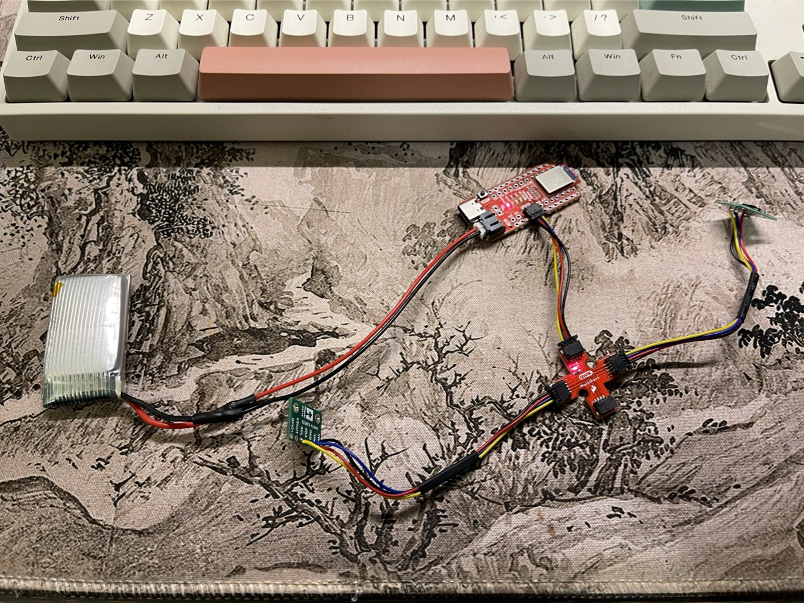
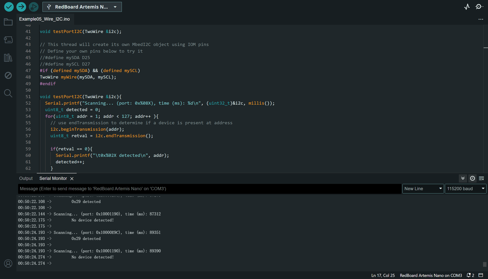
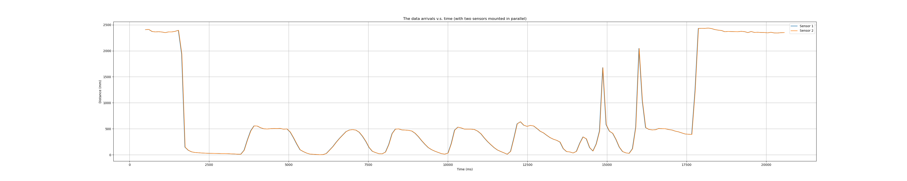
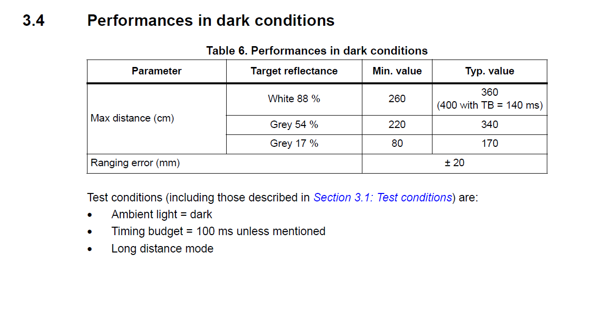

Lab 3 introduces the hardware soldering for connecting the ToF sensors and the battery to the Artemis Nano board. The performance of the ToF sensors will be exploredm, including the speed, accuracy and range, etc. Also, we will design a method involving wiring and coding to acquire the two ToF sensors' data given the same I2C address.
The purpose of this lab is to equip the robot with sensors - the faster the robot can sample and the more it can trust a sensor reading, the faster it is able to drive.
According the datasheet, the sensor performs best under dark conditions (no IR interference within the operating spectrum) with light-colored objects (max 3.4m operating range).
When the color of object gets darker, the operating range of the ToF sensor will degrade.
Also, as the ambient light gets stronger, the operating range of the ToF sensor also degrades. When there is sunlight from outside a clear window and there's direct illumination,
the ToF sensor's operating range will be limited within 73cm, given a light-colored object.
Below are the key measurements from the datasheet.
Default value: 0x52 (82d). Can be changed by programming (see code below).
#include "SparkFun_VL53L1X.h"
SFEVL53L1X distanceSensor; // instantiate
#define dSensorAddr 88 // define a new I2C address in int, e.g. 88
Wire.begin();
distanceSensor.setI2CAddress(dSensorAddr);
int currentAddr = distanceSensor.getI2CAddress()
The XSHUT hole on the Pololu VL53L1X board is connected to the XSHUT pin of the sensor itself. It is activated given digital LOW. The sensor will be powered off
if the XSHUT is given LOW. When the power supply is present and XSHUT is LOW, the sensor goes into hardware standby period. Then if we set XSHUT to HIGH, the sensor
will boot up for less than 1.2ms and stand by.
Thus, to control the two sensors in parallel, we can use QUIIC to connect the two sensors to the breakout board and solder wires connecting the XSHUT pins with two available pins on the Artemis Nano board.
Inside the code, we can use two different instances of the SFEVL53L1X struct to control the two ToF sensors independently.
When the program goes into setup(), we can boot up one of the sensors first by setting the XSHUT to HIGH and use the first instance of SFEVL53L1X to assign it a new I2C address. When this finishes, we can do some initial settings.
After that, we can boot up the other sensor without assigning a new I2C address. Then use the second instance of SFEVL53L1X to do some initial settings.
The range sensitivity has been discussed above. For the angular operating range, we can refer to the schematic below. The emitter operates within \( \pm 18.25 \) degrees, the receiver \( \pm 18.3 \) degrees. So it is reasonable to mount the ToF sensors on the front of the RC car. Also, their center beams should point staright forward and be within the same horizontal plane. But the distance between the sensors should be experimented to avoid mutual interference.
Below is the picture showing the soldering outcome and the connection.
First, we scan the I2C addresses when 1 ToF is connected.

The Artemis MCU supports 6 I2C ports including multiplex ports. Among them, the Port 2 and Port 3 has been pre-defined in the schematic diagram. So the scanning result contains two ports, one
is connected to the ToF via QUIIC (Port 2), and the other port is not connected (the Port 3 on pin 6 and pin 7).
The returned address is 0x29 (0010 1001b) on I2C Port 2, which differs from the default address of ToF (0x52, 0101 0010b). This is because the I2C address is consisted of only 7 bits, we should left-shift for 1 bit when reading received slave address.
When we are writing to the slave, the address is consisted of 8bits, the MSB (bit 7) to bit 1 are the actual chip address of the slave, while the LSB (bit 0) is the R/W flag bit.
It is more convenient to compare the differences of measuring ranges if we mount the two ToFs in parallel and set them in different range modes. In the experiment below, I set one sensor at Short and the other at Long. The diagram below is the comparison of the readings of the two sensors. (The sensors operate at 10Hz, so the readings from the two sensors may not be perfectly synchronized, so I tried to move the ToFs as slowly as possible to keep the data sync)
The two ToFs are temporarily binded together to keep them roughly parallel.
As we can see from the diagram, the readings from the two sensors are approximately equal for most of the time. But the short range sensor appears to be more accurate when the distance of object is below 1000mm (see the diagram between 27~30s).
After connecting PIN-14 and PIN-15 of the Artemis board to the two ToFs' XSHUT pins, we can assign them different addresses and control them using Two instantiated structs.
#define DS1_PIN 14
#define DS2_PIN 15
SFEVL53L1X distanceSensor1(Wire, DS1_PIN);
SFEVL53L1X distanceSensor2(Wire, DS2_PIN);
#define dSensorAddr 88
Serial.begin(115200);
distanceSensor1.sensorOff();
distanceSensor2.sensorOff();
Serial.println("Sensors Off");
Wire.begin();
Serial.println("VL53L1X Qwiic Test");
// set DS1 to a new address
distanceSensor1.sensorOn();
delay(2);
distanceSensor1.setI2CAddress(dSensorAddr);
// set the range mode
distanceSensor1.setDistanceModeLong();
Serial.print("Set Distance Sensor 1 Address: ");
Serial.println(dSensorAddr);
// check if DS1 is online
if (distanceSensor1.begin() != 0) //Begin returns 0 on a good init
{
Serial.println("Sensor 1 failed to begin. Please check wiring. Freezing...");
while (1)
;
}
Serial.println("Sensor 1 online!");
// boot up another DS2
distanceSensor2.sensorOn();
// set distance mode
distanceSensor2.setDistanceModeShort();
delay(2);
if (distanceSensor2.begin() != 0) //Begin returns 0 on a good init
{
Serial.println("Sensor 2 failed to begin. Please check wiring. Freezing...");
while (1)
;
}
Serial.println("Sensor 2 online!");
The two ToF sensors may not return the data at the same frequency and speed, so the way we retrieve data in the main loop() will affect the frequency we print the data in the serial. If we print data when at least one of the sensors is ready, one of the sensors may be faster than the other. But if we print data only when the two sensors have updated new data, the average data updating rate will be lowered.
As was mentioned in the previous task, the two sensors may be ready at different frequencies.
This brings about prblems when trying to synchornize the data.
There are two methods to check the data status from the two sensors and send the data via Serial, as the code blocks shown below. We can compare the two methods as
a reference for later developments.
Method 1: check for the data from sensor 1, and check sensor 2 after data from sensor 1 has been fetched.
bool isDS1Ready, isDS2Ready;
void loop(void)
{
distanceSensor1.startRanging(); //Write configuration bytes to initiate measurement
while (!distanceSensor1.checkForDataReady())
{
delay(1);
}
if(distanceSensor1.checkForDataReady()){
int distance1 = distanceSensor1.getDistance(); //Get the result of the measurement from the sensor
distanceSensor1.clearInterrupt();
distanceSensor1.stopRanging();
Serial.print("Address 1 [");
Serial.print(distanceSensor1.getI2CAddress()); // 0x52 = 82d for both of the sensors.
Serial.print("] Distance 1 (mm) [");
Serial.print(distance1);
Serial.print("]");
Serial.println();
}
distanceSensor2.startRanging();
while (!distanceSensor2.checkForDataReady())
{
delay(1);
}
if(distanceSensor2.checkForDataReady()){
int distance2 = distanceSensor2.getDistance(); //Get the result of the measurement from the sensor
distanceSensor2.clearInterrupt();
distanceSensor2.stopRanging();
Serial.print("Address 2 [");
Serial.print(distanceSensor2.getI2CAddress()); // 0x52 = 82d for both of the sensors.
Serial.print("] Distance 2 (mm) [");
Serial.print(distance2);
Serial.print("]");
Serial.println();
}
}
Such method checks the two sensors in turn, so the output data will always be "sensor 1, sensor 2, sensor 1, sensor 2, ...". As we can see below, the time interval between two consecutive data points from sensor 1 or 2 will be \( 209 \pm 1 \)ms, the time interval between data from sensor 2 and 1 in the same loop will be \( 105 \) ms when the system runs for 40 data points.
As can be seen from the diagram above, the data rate is steady. Consecutive incoming data points are at an interval of ~0.104s.
bool isDS1Ready, isDS2Ready;
distanceSensor1.startRanging(); //Write configuration bytes to initiate measurement
distanceSensor2.startRanging(); //Write configuration bytes to initiate measurement
void loop(void)
{
while(1){
isDS1Ready = distanceSensor1.checkForDataReady();
isDS2Ready = distanceSensor2.checkForDataReady();
if(isDS1Ready || isDS2Ready){
break;
}
}
if(isDS1Ready){
int distance1 = distanceSensor1.getDistance(); //Get the result of the measurement from the sensor
distanceSensor1.clearInterrupt();
distanceSensor1.stopRanging();
Serial.print("Address 1 [");
Serial.print(distanceSensor1.getI2CAddress()); // 0x52 = 82d for both of the sensors.
Serial.print("] Distance 1 (mm) [");
Serial.print(distance1);
Serial.print("]");
Serial.println();
distanceSensor1.startRanging(); //Write configuration bytes to initiate measurement
}
if(isDS2Ready){
int distance2 = distanceSensor2.getDistance(); //Get the result of the measurement from the sensor
distanceSensor2.clearInterrupt();
distanceSensor2.stopRanging();
Serial.print("Address 2 [");
Serial.print(distanceSensor2.getI2CAddress()); // 0x52 = 82d for both of the sensors.
Serial.print("] Distance 2 (mm) [");
Serial.print(distance2);
Serial.print("]");
Serial.println();
distanceSensor2.startRanging(); //Write configuration bytes to initiate measurement
}
}
the diagrams are too small for browsing, please click HERE. Or please
open the images in a new page.
Below is a small experiment about how sampling rate affects the safety of the RC car. When I fix the two ToF sensors and let them measure their distance to my cellphone, I move my
cellphone back and forth very quickly to see the results from the above two data retrieving methods. See the figures below, if we use the 1st method, the measured distance will be
smaller than actual (the picks of distance is actually > 500mm, but the sensors missed the measurements since I moved my cellphone too quickly).
Below is the result of Method 1.
Below is the result of Method 2, which has smoother and more synchronized curves.
We collect 500 pairs of data from the two sensors, the data frame format is "stamp address distance". See the screenshots below.
Most ToF sensors are based on infrered, which is relatively cheap and simple compared to those sensors using UV for long range applications. However, the low frequency of IR rays
causes them to be prone to be absorbed as heat by the object it bumps into. Thus, IR is prone to be affected by the color and texture of the object.
But for now, most ranging sensors still adopt IR based sensing, due to the accuracy, low cost, small size and accuracy it brings.
Aside from ranging, there are other sensors that uses the reflection characters of infrered rays, such as IR thermometer, IR human motion sensors, etc. Both of them are prone to be
affected by ambient light, and the IR motion sensors are always relatively large in size. But their pros include the energy efficiency, accuracy under preferred operating environments
and low cost.
The color of object mainly affects the absorbing percentage of the IR rays. As is mentioned in the datasheet, we should consider the color of object in addition to the
ambient light when discussing the operation accuracy (see the figure below).

The texture of object contributes to the reflection of the emitted IR rays. If the object is smooth and polished, the IR rays may not return to the sensor due to the specular reflection.
Diffuse reflection is preferred for ToF sensors.
THE END